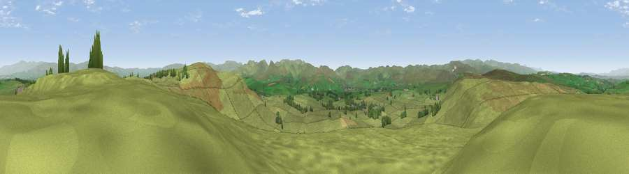

Viewpoint near Orton
#7552 in England · top 29% of its area beats it · near OrtonThe view, rendered

A 360° render of this exact spot computed from the terrain model, tree cover and land cover — summer colours, afternoon light, calibrated against photographs of famous viewpoints. Real trees, hedges and buildings will differ in detail.
The panorama
Grey silhouette: terrain skyline in each direction (720 bearings, Earth curvature and refraction included). Dashed green: skyline with trees (+15 m) and buildings (+8 m) as obstacles. Blue strip: how far the ground is visible on each bearing.
Where the view opens
Wedge length = distance to the farthest visible ground on that bearing (vegetation-aware). Rings at 10, 25 and 50 km.
What fills the view
96% grassland · 3% woodland · 1% cropland
Angular shares of the visible panorama (visual magnitude), not map area. Landscape diversity 0.09 (0–1 Shannon).
Key numbers
More beautiful places nearby
The staircase of upgrades: each row has a higher view potential than everything closer. Driving times are estimates from straight-line distance, calibrated against real road routing — check an actual route before setting out.
| Place | Direction | Drive | Score |
|---|---|---|---|
| Knott | ESE · 1 km | ~4 min | 68.2 |
| Long Scar Pike [Coalpit Hill] | WNW · 4 km | ~9 min | 68.9 |
| Long Fell | W · 8 km | ~16 min | 72.4 |
| Blease Fell | S · 9 km | ~18 min | 73.3 |
| Uldale Head | S · 10 km | ~19 min | 74.0 |
| Ashstead Fell | SW · 10 km | ~20 min | 76.3 |
| Castle Fell | SW · 10 km | ~20 min | 77.2 |
| Fell Head | S · 12 km | ~22 min | 78.8 |
54.48244, -2.56756 · source: screening · position refined by local search. Computed location — check access rights before visiting.